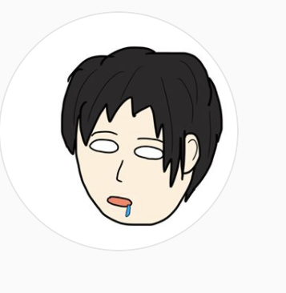
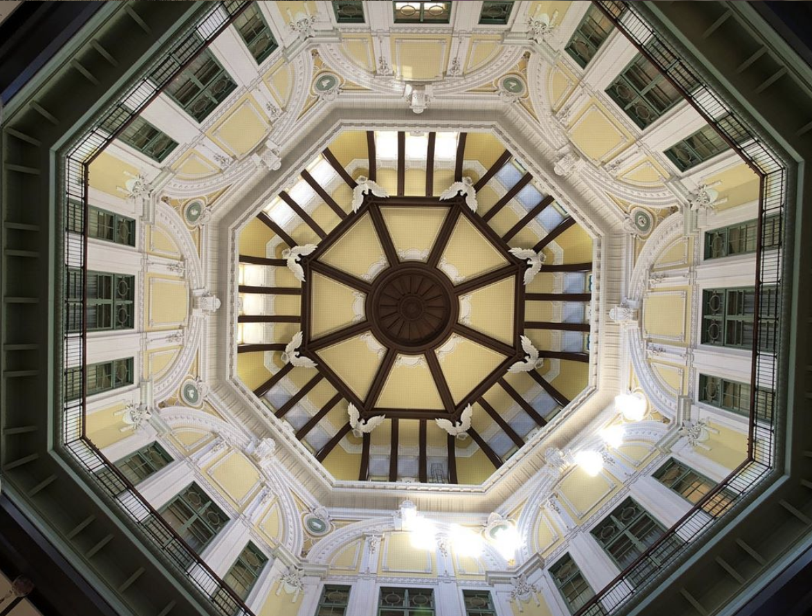

仕事の合間で
みなさんに提供できる写真を撮影してます

普段は関東地方を飛び回って仕事をしております。たくさん訪れる場所があり、移動がきつい事もありますが、色々な良い風景を観察する事ができて、自分には最高の環境で働けています。
幻想的かつ現実的な写真を
普段みなさんが通るような場所でもたくさんの風景が眠っています。

日常の風景を
感動的なものにするため
定期的にアップします。
写真の品質もそうですが、日頃の生活から見れる何気ない風景から感動を味わえるようにするために、写真でヒントをあたえます。
※たまにどこの場所なのか知りたいけどわからないと思われる方はコメントを下さい

たまには都会の喧騒から離れて
いつもお仕事ご苦労様です。疲れたときこそ、都会から少し離れてみてはいかがですか？ゆったりとした飲み屋で一杯グイッと！